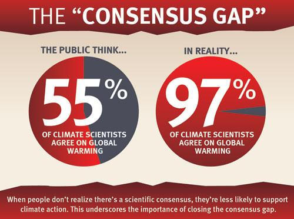

El consenso científico es que el sistema climático de la Tierra inequívocamente está en calentamiento y que es sumamente probable (es decir, con una probabilidad mayor al 95 %) que este calentamiento sea predominantemente causado por los seres humanos. Es probable que esto surja principalmente del aumento de las concentraciones de gases de efecto invernadero en la atmósfera producto de la deforestación y la quema de combustibles fósiles, parcialmente compensado por el aumento de los aerosoles causado por el hombre; los cambios naturales tuvieron poco efecto.
Esta opinión científica está expresada en informes de síntesis, por cuerpos científicos de prestigio nacionales e internacionales y por encuestas de opinión entre científicos del clima. Científicos, universidades y los laboratorios individuales contribuyen a la opinión científica global a través de sus publicaciones revisadas por pares, y las áreas del acuerdo colectivo y certeza relativa son resumidas en los informes y encuestas. Desde 2004, se han llevado a cabo al menos 9 encuestas a científicos y metaestudios de artículos académicos sobre el calentamiento global. Pese a que hasta el 18 % de los científicos encuestados puede disentir de la opinión consensuada, cuando se restringe a los científicos que publican en el campo del clima, el 97 al 100 % está de acuerdo con el consenso: el actual calentamiento es principalmente antrópico.
| Q1 | Número incl. indet. | Número excl. indet. | Consenso incl. indet. | Consenso excl. indet. |
| Todos | 1868 | 1461 | 66 [64 - 68] % | 84 [82 - 86] % |
| 0-3 publ | 388 | 278 | 57 [52 - 62] % | 79 [74 - 84] % |
| 4-10 publ | 480 | 396 | 69 [65 - 73] % | 84 [80 - 88] % |
| 11-30 publ | 373 | 304 | 71 [66 - 76] % | 87 [83 - 90] % |
| 32-300 publ | 379 | 319 | 77 [73 - 81] % | 91 [87 - 94] % |
| AR4 WG1 author | 174 | 142 | 79 [72 - 85] % | 97 [93 - 99] % |
| SD WG1 | 1118 | 914 | 70 [67 - 73] % | 85 [83 - 87] % |
| SD WG2 | 534 | 438 | 71 [67 - 75] % | 87 [84 - 90] % |
| SD WG3 | 120 | 94 | 74 [65 - 82] % | 95 [88 - 98] % |
| SD attr or aer | 175 | 146 | 74 [67 - 81] % | 88 [81 - 93] % |
| No “convencido” | 88 | 50 | 7 [3 - 14] % | 12 [5 - 24] % |
| “Convencido” | 1780 | 1411 | 69 [67 - 71] % | 87 [85 - 89] % |
| Q3 | Número incl. indet. | Número excl. indet. | Consenso incl. indet. | Consensp excl. indet. |
| Todos | 1747 | 1682 | 83 [81 - 85] % | 86 [84 - 88] % |
| 0-3 publ | 388 | 370 | 75 [70 - 79] % | 79 [74 - 83] % |
| 4-10 publ | 480 | 464 | 83 [79 - 86] % | 85 [81 - 88] % |
| 11-30 publ | 373 | 360 | 86 [82 - 89] % | 89 [85 - 92] % |
| 32-300 publ | 379 | 369 | 89 [85 - 92] % | 92 [89 - 94] % |
| AR4 WG1 author | 165 | 161 | 93 [88 - 96] % | 96 [92 - 99] % |
| SD WG1 | 1118 | 1087 | 85 [83 - 87] % | 87 [85 - 89] % |
| SD WG2 | 534 | 514 | 86 [83 - 89] % | 90 [87 - 93] % |
| SD WG3 | 120 | 113 | 82 [74 - 88] % | 87 [79 - 92] % |
| SD attr or aer | 175 | 171 | 83 [76 - 88] % | 85 [79 - 90] % |
Tabla. Niveles de acuerdo para diferentes subgrupos basados en la pregunta 1 (la contribución cuantitativa de los gases de efecto invernadero que exceden el 50% del calentamiento reciente) y la pregunta 3 (la contribución cualitativa de los gases de efecto invernadero es (empatada) más alta entre varios factores naturales y antropogénicos). Los subgrupos se segregan en cuartiles por su número autodeclarado (SD) de publicaciones revisadas por pares relacionadas con el clima, por su campo de experiencia autodeclarado (agregado en grupos de trabajo, campos (WG)), por ser un autor de AR4 WG1 y por ser etiquetado (o no) como "no convencido". El nivel de consenso y el número de encuestados en el subgrupo se dan incluyendo y excluyendo las respuestas "indeterminadas" ("No sé", "Desconocido" u "Otro").